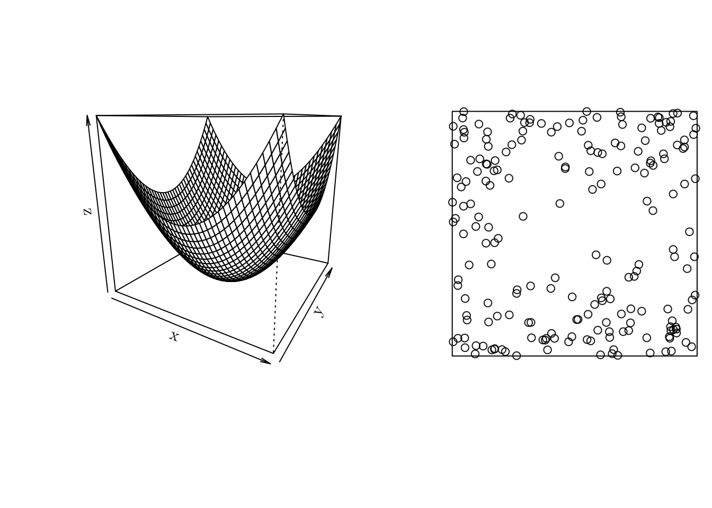

library("spatstat")
library("inlabru")
library("ggplot2")
library("tmap")
library("raster")
library("rgeos")
library("INLA")
library("sf")Inference in Point Processes
In this tutorial, we will use the following R packages.
Point process
Let x \in \mathcal{D} \subseteq \mathbb{R}^n, n \in \{1, 2, \cdots\}, such that \mathcal{D} is the domain. Then, a point process \xi is defined as a locally finite random subset of \mathcal{D}; that is, \mathcal{N}(D) := \#(\xi \cap \text{D}) is finite for all bounded subsets \text{D} \subseteq \mathcal{D}, where \#(\text{A}) denotes de cardinality of \text{A}.
As a note, a point process is random mechanism whose outcome is a point pattern.
Intensity
For a point process, we may define an intensity function as follows
Let \lambda: \mathcal{D} \rightarrow [0, +\infty), such that \int_{D}\lambda(x)dx < +\infty, for all bounded \text{D} \subseteq \mathcal{D}. \lambda(x) is the intensity function of a point process \xi, if \mathbb{E}[\mathcal{N}(D)] = \int_{\text{D}}\lambda(x)dx, ~ \text{D} \subseteq \mathcal{D}.
If \lambda(x) = \lambda, \forall x, that is, if it is a constant function, notice that \mathbb{E}[\mathcal{N}(D)] = \lambda \cdot |\text{D}|. In that case, \lambda denotes the average number of points per unit area.
Also, the intensity function is closely related to the probability density.
If \xi is a point process with intensity function \lambda(x) defined on \mathcal{D}, then each individual point inside \mathcal{D} has probability density f(x) = \frac{\lambda(x)}{\Lambda_{\mathcal{D}}}, where \Lambda_{\mathcal{D}} = \int_{\mathcal{D}}\lambda(x)dx.
Using spatstat we can generate a point pattern containing n independent, identically distributed random points with intensity f using the rpoint() function.
f <- function (x, y) { (x ** 2 + y ** 2) }
x <- seq(-1, 1, 0.05)
y <- seq(-1, 1, 0.05)
z <- outer(X = x, Y = y, FUN = f)
w <- owin(xrange = c(-1, 1), yrange = c(-1, 1)) # Area: (2 units x 2 units)
pp <- rpoint(n = 200, f = f, win = w)
par(mfrow = c(1, 2))
persp(x, y, z, theta = 30)
plot(pp, main = "")
Poisson Point Process
A point process \xi defined on \mathcal{D} is a Poisson point process with intensity function \lambda(x) if the following properties are satisfied
For any bounded \text{D} \subseteq \mathcal{D}, \mathcal{N}(\text{D}) \sim \text{Poisson}(\int_{\text{D}}\lambda(x)dx).
For any bounded \text{D} \subseteq \mathcal{D} and n \in \mathbb{N}, conditional on \mathcal{N}(\text{D}) = n, the events \xi \cap \text{D} are independent with intensity proportional to \lambda(x).
As a note, it \lambda(x) = \lambda, \forall x, then \xi is a homogeneous Poisson process; otherwise, it is a non-homogeneous Poisson process.
Homogeneous Poisson process
We can manually simulate a homogeneous Poisson process as follows
- Determine \mathcal{N}(D), for some D \subseteq \mathcal{D}.
- Simulate the number of events n from a Poisson(\lambda\cdot|D|).
- Obtain the location of the n events by simulating from an uniform distribution.
sim.HPP <- function (lambda, max = 1, min = 0, ...) {
m <- lambda * (max - min)
N <- rpois(1, lambda = m)
sort(runif(N, min = min, max = max))
}
hpp <- sim.HPP(lambda = 0.5, max = 100, min = 0)
print(hpp) [1] 0.3535495 0.5396310 5.5676715 10.3492299 11.1476796 14.4515851
[7] 14.9180392 15.9673980 17.4775137 19.1189961 19.6719169 19.9752943
[13] 22.1834201 22.2928340 24.2387337 25.0736451 26.7346206 32.7452220
[19] 41.6347296 43.4830146 43.5288069 43.8059504 44.7422891 49.2827306
[25] 51.4434260 57.4189733 57.7254297 57.7635149 58.9999127 59.8600273
[31] 60.8599697 61.2403756 61.6342769 68.0476603 72.9181244 73.6506027
[37] 74.4836050 75.3390585 76.2458188 81.5512829 85.0963224 90.6697583
[43] 91.9029311 95.1212361 95.9875866 99.2158440 99.7424144 99.7688745print(length(hpp))[1] 48# Plot 1D PP
plot1D.pp <- function (pp, xlim = NA, ...) {
par(mfrow = c(1, 1))
if (is.na(xlim)) { xlim <- c(floor(min(pp)), ceiling(max(pp))) }
plot(x = NA, xlab = "", ylab = "", xlim = xlim, ylim = c(0, 1), axes = FALSE, frame = FALSE, asp = diff(xlim) * 0.1)
arrows(x0 = pp, y0 = 1, x1 = pp, y1 = 0)
axis(1, pos = 0)
}
plot1D.pp(hpp)An unbiased estimator for \lambda in a homogeneous Poisson process is \hat{\lambda} = \frac{\#(x)}{|D|}, where \mathbf{x} is the point pattern data set, and D is the observed in a window.
(lambda_hat <- length(pp) / 100)[1] 0.05Non-homogeneous Poisson process
To simulate from a non-homogeneous Poisson process, we can use the thinning (Lewis and Shedler, 1979).
- Find \max(\lambda(x)), i.e., the maximum of \lambda(x) in \mathcal{D}.
- Simulate a homogeneous Poisson process with \lambda = \max(\lambda(x) \cdot |D|).
- Accept each event with probability \lambda(x_i)/\max(\lambda(x)).
For example, let \lambda(x) = \exp(\beta_0 + \beta_1 \cdot x), such that \beta_0 = -1 and \beta_1 = 0.015.
l <- function(x, par, log = FALSE, ...) {
eta <- par[1] + par[2] * x
if (log) { res <- eta } else { res <- exp(eta) }
res
}
pts <- seq(0, 100, 0.1)
par <- c(-1, 0.015)
plot(x = pts, y = l(pts, par), type = "l", xlab = "x", ylab = "y")In that case, \mathbb{E}[\mathcal{N}(D)] = 85, such that D = [0, 100].
integrate(l, lower = 0, upper = 100, par = par)85.38946 with absolute error < 9.5e-13sim.NHPP <- function (par, FUN, max = 1, min = 0, ...) {
max_lb <- optimize(FUN, c(min, max), par = par, maximum = TRUE)$objective
lambda <- max_lb * (max - min)
# As in `sim.IPP()`
N <- rpois(1, lambda = lambda)
pts <- sort(runif(N, min = min, max = max))
# Accept or reject
p.accept <- FUN(pts, par) / max_lb
pp <- pts[runif(length(pts)) <= p.accept]
attributes(pp) <- list(simulated = length(pts), accepted = length(pp), rate = length(pp) / length(pts))
pp
}
nhpp <- sim.NHPP(par = par, FUN = l, max = 100, min = 0)
print(unlist(attributes(nhpp))) simulated accepted rate
143.0000000 84.0000000 0.5874126 plot1D.pp(nhpp)Likelihood function
The likelihood function of a point process is obtained based on the density function of the two observed variables, namely the number of events \mathcal{N} and the locations \{x\}.
For a Poisson process, we have that \mathcal{N}(D) \sim \text{Poisson}(\int_D\lambda(x)dx) and, for each x, $(x_i) = (x_i) / . Therefore, \begin{align*} L(\theta) &= \frac{e^{-(\int_D\lambda(x)dx)}(\int_D\lambda(x)dx)^N}{N!} \prod_{i = 1}^N \frac{\lambda(x_i)}{\int_D\lambda(x)dx} \\ &\propto e^{-(\int_D\lambda(x)dx)}\prod_{i = 1}^N\lambda(x_i), \end{align*} where N is a a realization of \mathcal{N}(D). The log-likelihood is given by \begin{align*} \ell(\theta) \propto \sum_{i = 1}^{N}\log(\lambda(x_i)) - \int_D\lambda(x)dx. \end{align*}
For a homogeneous Poisson process, \begin{align*} \ell(\lambda) &\propto N \log(\lambda) - \lambda\cdot|D| \\ \hat{\lambda} &= \frac{N(D)}{|D|}. \end{align*}
However, for a non-homogeneous Poisson process, the MLE for will depend of the form of \lambda(x). In our previous example \begin{align*} \ell(\beta_0 + \beta_1) \propto \sum_{i = 1}^N\log(\beta_0 + \beta_1x_i) - \int_D\beta_0 + \beta_1x dx. \end{align*} Although, in some cases it is possible to have a closed-form solution for (\hat{\beta}_0, \hat{\beta}_1)^{\top}, let us compute them numerically.
Example
Let us implement the log-likelihood function as before
lik.NHPP <- function (par, FUN, pp, max = 1, min = 0, ...) {
int.l <- integrate(FUN, low = min, upp = max, par = par)$value
sum.t <- sum(FUN(x = pp, par = par, log = T))
-(sum.t - int.l)
}
initial_values <- c(0, 0)
(theta_hat <- optim(par = initial_values, fn = lik.NHPP, FUN = l, pp = nhpp, min = 0, max = 100)[1:2])$par
[1] -1.0336698 0.0152766
$value
[1] 90.92931hypothesis test
We can visually inspect whether the point pattern seemed to be sampled from a (non-)homogeneous process by counting the number of events by interval.
L <- psp(x0 = 0, y0 = 0, x1 = 100, y1 = 0, owin(c(0, 100), c(-5, 5)))
pp <- as.ppp(cbind(c(nhpp), 0), W = L)
q <- quadratcount(X = pp, nx = 8, ny = 1)
plot(q, main = "")Alternatively, we can conduct a hypothesis test. In particular, we test the null hypothesis that the data pattern is a realization of Complete Spatial Randomness”; i.e., uniform Poisson point process.
ts <- quadrat.test(X = pp, nx = 8, ny = 1)
ts
Chi-squared test of CSR using quadrat counts
data: pp
X2 = 22.286, df = 7, p-value = 0.004535
alternative hypothesis: two.sided
Quadrats: 8 by 1 grid of tilesIn the case of nhpp (known to be a realization from non-homogeneous process), at a 5% confidence level, we reject the null hypothesis data pattern is a realization of “Complete Spatial Randomness”.
Cox Process
As a generalization of a Poisson process, we can define a Cox process. In a nutshell, a Cox process allows the modelling of the non-observable spatial heterogeneity.
A Cox process can be seen as a doubly stochastic process. \xi is a Cox process driven by \Lambda(x) if
\{\Lambda(x); x \in \mathcal{D}\} is a non-negative valued stochastic process.
Conditional on \{\Lambda(x) = \lambda(x); \mathbf{x} \in \mathcal{D}\}, \xi is a Poisson process with intensity function \lambda(x).
A particular case of a Cox process, named log-Gaussian Cox process, can be constructed by setting \log\{\Lambda(x)\} = \mu^{\star}(x) + \zeta(x), such that \mu(x) = \exp\{\mu^{\star}(x)\} is possibly interpreted as the mean structure of \Lambda(x), and \zeta(x) is a stationary Gaussian process, such that \mathbb{E}(\zeta(x)) = -\sigma^2/2, \forall x, and \text{Cov}(\zeta(x_1), \zeta(x_2)) = \phi(h) = \sigma^2 \rho(h), where h = ||x_1 - x_2|| and \sigma^2 is the variance of \zeta(x) .
For instance, the correlation structure can be set as a Matérn model, that is, \rho(h) = \frac{1}{2^{\nu - 1}\Gamma(\nu)}(\kappa \cdot h)^{\nu} \,\text{K}_{\nu}(\kappa \cdot h), such that \nu and \kappa are unknown parameters, and \text{K}_{\nu}(\cdot) is a modified Bessel function of 2^{\text{nd}} order.
INLA and R-INLA
To fit a LGCP model, we will use the Integrated Nested Laplace Approximation, INLA (Rue et al., 2009), implemented in the R-INLA package.
In a nutshell, INLA is a method for approximating Bayesian inference in latent Gaussian models. In particular, it can be used to fit models of the form \begin{align*} y_i|S(x_i), &\theta \sim \pi(y_i|S(x_i), \theta), \text{ for } i \in \{1, \cdots, n\} \\ S(x)|\theta &\sim \text{Normal}(\mu(\theta), Q(\theta)^{-1}) \\ \theta &\sim \pi(\theta), \end{align*} where y = (y_1, \ldots, y_n) is the vector or observed values, x = (x_1, \ldots, x_n) is a Gaussian random field, and \theta = (\theta_1, \ldots, \theta_k), for some k \in \mathbb{N}, is a vector of hyperparameters. \mu(\theta) and Q(\theta) represent the mean vector and the precision matrix, respectively.
Fitting a LGCP with R-INLA
Although we can use a Stochastic Partial Differential Equation (SPDE)-approach to fit LGCP models using INLA (Simpson et al., 2016), we will consider a partition of \mathcal{D} given by cells c_{i, j}, for some set of index (i, j).
First, recall that if \xi is a LGCP, then the mean number of events in a cell c_{ij} is given by the integral of the intensity over the cell, that is, \int_{c_{i,j}}\exp\{\zeta(x)\}dx. Then, for sufficiently small cells, such an integral can be approximated by |c_{i,j}|\exp\{\zeta(x)\}, where |c_{i, j}| is the area of the cell c_{i, j}.
Thus, conditional on the latent Gaussian field \zeta(x), the number of locations in the grid cell c_{i, j}, \forall i, j, are independent and Poisson distributed as follows \mathcal{N}(c_{ij})|\zeta(x) \sim \text{Poisson}(|c_{i, j}| \cdot \exp\{\zeta(x)\}), where \zeta(x) is a Gaussian field.
Example 1
For the first example, we will analyze the spatial locations of cases of lung cancer in chorley (from spatstat.data). The data give the precise domicile addresses of new cases of cancer of the larynx (58 cases) and cancer of the lung (978 cases), recorded in the Chorley and South Ribble Health Authority of Lancashire (England) between 1974 and 1983.
print(chorley)Marked planar point pattern: 1036 points
Multitype, with levels = larynx, lung
window: polygonal boundary
enclosing rectangle: [343.45, 366.45] x [410.41, 431.79] kmplot(chorley, cols = c("red", rgb(0, 1, 0, 0.5)), pch = c(19, 4), cex = 0.75, main = "Cancer cases")lung <- chorley[chorley$marks == "lung"]
lung <- ppp(x = lung$x, y = lung$y, window = lung$window)
plot(lung, cols = "green", pch = 4, cex = 0.75, main = "Lung-cancer cases")Let us start by creating a grid based study area.
resolution <- 0.5
map <- as(st_as_sf(lung$window), "Spatial") # Convert it to a `SpatialPolygonsDataFrame` object
map$cancer <- "lung"
plot(map)r <- raster(map, resolution = resolution) # Create a `raster` object based on the map and resolution
(n_row <- nrow(r))[1] 43(n_col <- ncol(r))[1] 46Now, we have to count the number of observations within all cells and save it on the r object. To do so, we can create a SpatialPoints object based on the observations locations and use the cellFromXY() to count the number of points in each cell.
r[] <- 0 # Set all `NA` to `0`
dpts <- SpatialPoints(cbind(rev(lung$x), rev(lung$y))) # Convert the locations to a `SpatialPoints` object
(tab <- table(cellFromXY(r, dpts)))
128 176 247 248 292 293 294 301 307 337 338 339 341 342 343 347
1 1 2 1 4 9 5 3 1 4 3 12 2 9 1 5
348 349 383 384 385 386 387 388 389 393 397 398 399 400 404 426
2 2 6 6 6 5 2 6 3 13 5 2 2 7 1 3
427 432 433 434 435 439 440 441 444 445 446 448 453 470 472 473
3 2 11 13 4 8 7 5 3 4 3 1 2 3 2 2
478 479 480 481 482 484 485 486 487 488 491 492 493 514 515 516
2 8 1 1 1 1 3 8 7 2 1 2 1 1 1 5
517 518 521 522 527 528 529 530 531 532 533 535 537 538 539 561
3 1 2 1 2 7 7 2 2 14 7 2 1 1 1 3
564 566 567 568 570 574 575 578 579 606 607 613 614 621 624 625
2 1 4 1 2 2 8 2 6 2 3 3 6 1 2 1
654 656 668 673 676 699 700 701 744 745 749 753 754 760 761 765
2 1 1 2 2 3 2 1 1 1 1 1 1 2 3 2
767 790 802 803 805 806 811 818 835 844 847 848 849 850 851 852
1 2 1 3 6 11 3 1 2 1 1 13 10 6 11 1
853 857 860 863 868 870 891 892 893 894 895 896 897 898 899 903
4 1 1 2 1 2 2 9 10 3 5 8 11 11 1 1
904 911 937 938 939 940 941 942 943 944 950 954 958 959 975 982
8 1 5 3 4 9 4 4 1 5 4 2 1 6 1 1
985 986 995 996 999 1004 1022 1042 1043 1044 1046 1073 1080 1083 1088 1091
3 1 2 1 1 1 1 1 1 1 2 1 3 1 2 1
1128 1129 1134 1136 1161 1162 1166 1174 1175 1179 1180 1181 1182 1183 1184 1206
5 1 3 1 2 1 1 3 2 1 3 1 1 2 1 1
1207 1208 1212 1217 1221 1222 1226 1227 1228 1266 1269 1271 1272 1273 1274 1304
3 1 1 1 4 6 5 6 10 2 2 2 9 7 11 2
1306 1311 1317 1318 1319 1320 1321 1351 1352 1362 1363 1364 1365 1366 1367 1397
3 1 4 14 5 19 2 2 7 2 9 19 7 13 2 1
1398 1399 1402 1408 1409 1410 1411 1412 1446 1450 1454 1455 1456 1457 1498 1499
2 3 1 2 12 19 6 2 1 1 3 8 5 4 2 2
1502 1538 1544 1584 1588 1590 1591 1592 1599 1600 1635 1636 1637 1642 1643 1644
1 1 1 1 2 3 7 1 1 1 2 8 4 1 1 5
1645 1646 1683 1685 1686 1687 1690 1691 1692 1728 1735 1736 1772 1782
3 6 1 1 1 1 6 5 1 1 10 7 2 2 r[as.numeric(names(tab))] <- tab # Assign the number of observed events to the `raster` object
plot(r)
plot(map, add = T)Then, we can create a grid variable based on the raster object.
grid <- rasterToPolygons(r) # Convert it to a `SpatialPolygonsDataFrame` object
grid <- grid[as.vector(matrix(1:nrow(grid), nrow = n_row, ncol = n_col, byrow = T)), ] # Rearrange the indices numbering
grid$id <- 1:nrow(grid)
grid$Y <- grid$layer
grid$cellarea <- resolution * resolution
plot(grid)Lastly, we just compute the intersection between grid and map. This can be done using the raster::intersect() function (from the raster package, as the namespace suggests).
gridmap <- raster::intersect(x = grid, y = map) # Compute the intersection between `grid` and `map`
grid <- grid[grid$id %in% gridmap$id, ]
plot(grid)
plot(map, border = "red", lwd = 1, add = T)summary(grid)Object of class SpatialPolygonsDataFrame
Coordinates:
min max
x 343.45 366.45
y 410.29 431.79
Is projected: NA
proj4string : [NA]
Data attributes:
layer id Y cellarea
Min. : 0.0000 Min. : 10.0 Min. : 0.0000 Min. :0.25
1st Qu.: 0.0000 1st Qu.: 658.8 1st Qu.: 0.0000 1st Qu.:0.25
Median : 0.0000 Median :1110.5 Median : 0.0000 Median :0.25
Mean : 0.7128 Mean :1072.8 Mean : 0.7128 Mean :0.25
3rd Qu.: 0.0000 3rd Qu.:1485.2 3rd Qu.: 0.0000 3rd Qu.:0.25
Max. :19.0000 Max. :1971.0 Max. :19.0000 Max. :0.25 Now that we have prepared all the data, we can fit the model using R-INLA. To do so, we have to specify a formula and fit the model using the inla() function. For reference, check inla.doc("matern2d").
# Change prior of the precision parameter from (1 / sigma^2) ~ Gamma(1, 0.0005) for PC prior for sigma
# Prob(sigma > u) = alpha
prior.list <- list(prec = list(prior = "pc.prec", param = c(0.25, 0.01))) # c(u, alpha)
formula <- Y ~ 1 + f(id, model = "matern2d", nrow = n_row, ncol = n_col, nu = 1, hyper = prior.list) # Intercept + Matérn spatial random effects
res <- inla(formula,
family = "poisson",
data = grid@data,
E = cellarea) # Acts like an offsetsummary(res)
Call:
c("inla.core(formula = formula, family = family, contrasts = contrasts,
", " data = data, quantiles = quantiles, E = E, offset = offset, ", "
scale = scale, weights = weights, Ntrials = Ntrials, strata = strata,
", " lp.scale = lp.scale, link.covariates = link.covariates, verbose =
verbose, ", " lincomb = lincomb, selection = selection, control.compute
= control.compute, ", " control.predictor = control.predictor,
control.family = control.family, ", " control.inla = control.inla,
control.fixed = control.fixed, ", " control.mode = control.mode,
control.expert = control.expert, ", " control.hazard = control.hazard,
control.lincomb = control.lincomb, ", " control.update =
control.update, control.lp.scale = control.lp.scale, ", "
control.pardiso = control.pardiso, only.hyperparam = only.hyperparam,
", " inla.call = inla.call, inla.arg = inla.arg, num.threads =
num.threads, ", " keep = keep, working.directory = working.directory,
silent = silent, ", " inla.mode = inla.mode, safe = FALSE, debug =
debug, .parent.frame = .parent.frame)" )
Time used:
Pre = 1.74, Running = 4.91, Post = 0.0908, Total = 6.74
Fixed effects:
mean sd 0.025quant 0.5quant 0.975quant mode kld
(Intercept) -2.106 0.422 -3.013 -2.08 -1.351 -2.018 0
Random effects:
Name Model
id Matern2D model
Model hyperparameters:
mean sd 0.025quant 0.5quant 0.975quant mode
Precision for id 0.246 0.027 0.195 0.246 0.30 0.247
Range for id 5.792 0.509 4.893 5.757 6.89 5.661
Marginal log-Likelihood: -1073.43
is computed
Posterior summaries for the linear predictor and the fitted values are computed
(Posterior marginals needs also 'control.compute=list(return.marginals.predictor=TRUE)')Now, we can plot the random effects.
grid$R.E. <- res$summary.random$id[grid$id, "mean"]
gridborder <- gUnaryUnion(grid) # Plot the random effects using `tmap` package
tm_shape(grid) +
tm_polygons(col = c("R.E."), style = "cont", border.col = "transparent", midpoint = NA) +
tm_shape(gridborder) +
tm_borders() +
tm_facets(ncol = 1) +
tm_legend(legend.position = c("left", "bottom")) + tm_layout(fontfamily = "LM Roman 10", frame = FALSE)From the above map, we observe a non-constant pattern of the spatially structured random effect suggesting that the intensity of the process that generates the cancer-diagnosed patients’ locations may be affected by other spatial factors that have not been considered in the model.
cellarea <- resolution * resolution
grid$Mean <- res$summary.fitted.values[, "mean"] * cellarea
grid$Lower <- res$summary.fitted.values[, "0.025quant"] * cellarea
grid$Upper <- res$summary.fitted.values[, "0.975quant"] * cellarea
# Changing the margin size to accommodate the plot caption
bbox_new <- st_bbox(grid)
xrange <- bbox_new$xmax - bbox_new$xmin # range of x values
yrange <- bbox_new$ymax - bbox_new$ymin # range of y values
bbox_new[1] <- bbox_new[1] - (0.25 * xrange)
bbox_new <- bbox_new %>% st_as_sfc()
# Main plot for the estimated intensity (along with a 95% equal-tail credible interval)
tm_shape(grid, bbox = bbox_new) +
tm_polygons(col = c("Lower", "Mean", "Upper"),
style = 'fixed', border.col = "transparent",
breaks = c(0, 0.25, 0.5, 0.75, 1.0, 2, 5, 10, ceiling(max(grid$Upper)) + 1)) +
tm_shape(gridborder) +
tm_borders() +
tm_facets(nrow = 3) +
tm_legend(legend.position = c("left", "bottom")) +
tm_layout(fontfamily = "LM Roman 10", frame = FALSE, inner.margins = c(0, 0, 0, 0))From the above plot, we can identify (while also accounting for the estimating uncertainty) the areas with high incidence of lung-cancer patients (denoted by the estimated intensity process). Based on such information, policymakers can focus their resources on regions that matter the most when dealing with cancer management.
We can also include a temporal random effect in the R-INLA formula (e.g., f(id_time, model = "ar1")), with possibly space-time interaction terms (Held, 2000). That is precisely what we will do in our next example.
Example 2
For this example, we will analyze the location of terrorism attacks in a given country over the years. The two data objects (terror_country.rds and area_country.rds) can be downloaded from here and here, respectively.
terror_country <- readRDS(file = "terror_country.rds")
table(terror_country$country)
AFG AGO ALB ARE ARG ARM AUS AUT AZE BDI BEL BFA BGD
4783 1 6 4 13 5 33 5 4 204 9 17 813
BGR BIH BLR BRA CAF CAN CHE CHL CHN CIV CMR COD COG
11 9 6 10 112 22 5 40 54 31 118 353 2
COL CYP CZE DEU DOM DZA ECU EGY ERI ESP EST ETH FIN
659 13 14 126 1 169 6 550 16 17 3 31 10
FRA GBR GEO GHA GIN GNB GRC GTM GUY HND HRV HTI HUN
106 330 20 2 4 2 217 4 1 4 5 1 3
IDN IND IRL IRN IRQ ISL ISR ITA JAM JOR JPN KAZ KEN
125 4190 133 61 15022 2 324 49 1 14 16 16 279
KGZ KHM KOR KWT LAO LBN LBR LBY LKA MAR MDA MDG MEX
10 2 2 3 2 219 2 1156 19 2 2 6 48
MKD MLI MMR MNE MOZ MRT MWI MYS NER NGA NIC NLD NOR
7 278 108 3 88 2 1 36 86 2458 1 12 4
NPL NZL PAK PAN PER PHL POL PRT PRY PSE QAT RUS RWA
224 2 8116 1 22 2328 2 2 49 527 1 707 26
SAU SDN SEN SLE SOM SSD SVK SWE SWZ SYR TCD THA TJK
153 381 10 1 2087 120 1 52 1 1398 26 1039 8
TKM TTO TUN TUR TWN TZA UGA UKR URY USA UZB VEN YEM
7 3 61 651 2 19 32 1373 1 188 1 14 1712
YUG ZAF ZWE
28 61 5 Aiming to have a larger data set, we analyze the country with the highest number of observed events, i.e., IRQ. Also, we will analyze observed events that occurred from 2010 to 2015.
country_code <- "IRQ"
terror_country <- terror_country[terror_country$country == country_code, ]
terror_country <- terror_country[(terror_country$iyear >= 2010) & (terror_country$iyear <= 2015), ]
coordinates(terror_country) <- c("longitude", "latitude")
proj4string(terror_country) <- "+proj=longlat"
area_country <- readRDS(file = "area_country.rds")
area_country <- area_country[area_country$sov_a3 == country_code, ]
area_country <- spTransform(x = area_country, CRSobj = CRS("+proj=longlat"))
plot(area_country, main = "")
plot(terror_country, add = T, col = "green")Now, given a partition, we can do as before, and count the number of events in each cell. However, notice that we also have to account for the variable year when doing so.
resolution <- 0.5
r <- raster(area_country, resolution = resolution)
(n_row <- nrow(r))[1] 17(n_col <- ncol(r))[1] 20terror_country$year <- terror_country$iyear - min(terror_country$iyear) + 1
n_years <- length(unique(terror_country$year))
tab <- list()
ras <- list()
grids <- list()
grids_map <- list()
par(mfrow = c(2, 3), mar = c(2, 2, 2, 6) + 1)
for (y in 1:n_years) {
tab[[y]] <- table(cellFromXY(r, terror_country[terror_country$year == y, ]))
ras[[y]] <- r
ras[[y]][as.numeric(names(tab[[y]]))] <- tab[[y]]
values(ras[[y]])[is.na(values(ras[[y]]))] <- 0
grids[[y]] <- rasterToPolygons(ras[[y]])
grids[[y]] <- grids[[y]][as.vector(matrix(1:nrow(grids[[y]]), nrow = n_row, ncol = n_col, byrow = T)), ]
grids[[y]]$id <- 1:nrow(grids[[y]])
grids[[y]]$Y <- grids[[y]]$layer
grids[[y]]$cellarea <- resolution * resolution
grids_map[[y]] <- raster::intersect(x = grids[[y]], y = area_country)
grids[[y]] <- grids[[y]][grids[[y]]$id %in% grids_map[[y]]$id, ]
plot(ras[[y]], main = y)
plot(area_country, add = T)
}par(mfrow = c(1, 1))Then, we can create a data object with the extra id_time index.
for (y in 1:n_years) {
if (y == 1) {
data_inla <- grids[[y]]@data
} else {
data_inla <- rbind(data_inla, grids[[y]]@data)
}
}
data_inla <- cbind(data_inla, id_time = rep(x = 1:n_years, each = nrow(grids[[1]])))
data_inla[c(1:3, ((nrow(data_inla) - 2):nrow(data_inla))), ] layer id Y cellarea id_time
141 0 8 0 0.25 1
161 0 9 0 0.25 1
181 0 10 0 0.25 1
2795 2 320 2 0.25 6
2995 1 321 1 0.25 6
3005 0 338 0 0.25 6Finally, we can fit the model. In our case, we will define \begin{align*} \zeta(x, t) = \zeta_1(x) + \zeta_2(t), \end{align*} where \zeta_1(x) is a spatial model (e.g., Matérn) and \zeta_2(t) is a temporal model (e.g., AR1).
Alternatively, we could fit a model with interaction. For example, for x_i \in \mathcal{D}, \begin{align*} \zeta(x_i, t) = \alpha \zeta(x_i, t - 1) + \phi(x_i, t) \end{align*} where |\alpha| < 1 and \zeta(x, 1) follows a stationary distribution of a first-order autoregressive process (AR1), namely \text{Normal}(0, \sigma^2_{\omega}/(1 - \alpha^2)). And each \phi(x, t) follows a zero-mean Gaussian distribution temporally independent but spatially dependent at each time. In general, from Held, 2000,

Getting back to the chosen model, we have
prior.list <- list(prec = list(prior = "pc.prec", param = c(0.25, 0.01))) # Priors
# Separable space-temporal model: eta_ij = beta_0 + u_i + v_j
formula <- Y ~ 1 + f(id,
model = "matern2d",
nrow = n_row,
ncol = n_col,
nu = 1,
hyper = prior.list) + f(id_time, model = "ar1")
# Model with interaction: eta_ij = beta_0 + u_ij
# formula <- Y ~ 1 + f(id,
# model = "matern2d",
# nrow = n_row,
# ncol = n_col,
# nu = 1,
# group = id_time,
# control.group = list(model = "ar1"),
# hyper = prior.list)
res <- inla(formula,
family = "poisson",
data = data_inla,
E = resolution)summary(res)
Call:
c("inla.core(formula = formula, family = family, contrasts = contrasts,
", " data = data, quantiles = quantiles, E = E, offset = offset, ", "
scale = scale, weights = weights, Ntrials = Ntrials, strata = strata,
", " lp.scale = lp.scale, link.covariates = link.covariates, verbose =
verbose, ", " lincomb = lincomb, selection = selection, control.compute
= control.compute, ", " control.predictor = control.predictor,
control.family = control.family, ", " control.inla = control.inla,
control.fixed = control.fixed, ", " control.mode = control.mode,
control.expert = control.expert, ", " control.hazard = control.hazard,
control.lincomb = control.lincomb, ", " control.update =
control.update, control.lp.scale = control.lp.scale, ", "
control.pardiso = control.pardiso, only.hyperparam = only.hyperparam,
", " inla.call = inla.call, inla.arg = inla.arg, num.threads =
num.threads, ", " keep = keep, working.directory = working.directory,
silent = silent, ", " inla.mode = inla.mode, safe = FALSE, debug =
debug, .parent.frame = .parent.frame)" )
Time used:
Pre = 2.12, Running = 1.76, Post = 0.062, Total = 3.94
Fixed effects:
mean sd 0.025quant 0.5quant 0.975quant mode kld
(Intercept) -2.786 0.611 -4.033 -2.769 -1.63 -2.768 0
Random effects:
Name Model
id Matern2D model
id_time AR1 model
Model hyperparameters:
mean sd 0.025quant 0.5quant 0.975quant mode
Precision for id 0.164 0.021 0.125 0.164 0.208 0.164
Range for id 2.836 0.288 2.317 2.819 3.452 2.782
Precision for id_time 8.147 2.760 4.044 7.712 14.776 6.911
Rho for id_time 0.569 0.102 0.341 0.579 0.739 0.603
Marginal log-Likelihood: -2303.43
is computed
Posterior summaries for the linear predictor and the fitted values are computed
(Posterior marginals needs also 'control.compute=list(return.marginals.predictor=TRUE)')astly, as in the previous example, we can plot the estimated intensity for all years.
grid <- grids[[1]]
cells_grid <- nrow(grids[[1]])
cellarea <- resolution * resolution
grid$M1 <- res$summary.fitted.values[, "mean"][1:cells_grid] * cellarea
grid$M2 <- res$summary.fitted.values[, "mean"][(cells_grid + 1):(cells_grid * 2)] * cellarea
grid$M3 <- res$summary.fitted.values[, "mean"][(cells_grid * 2 + 1):(cells_grid * 3)] * cellarea
grid$M4 <- res$summary.fitted.values[, "mean"][(cells_grid * 3 + 1):(cells_grid * 4)] * cellarea
grid$M5 <- res$summary.fitted.values[, "mean"][(cells_grid * 4 + 1):(cells_grid * 5)] * cellarea
grid$M6 <- res$summary.fitted.values[, "mean"][(cells_grid * 5 + 1):(cells_grid * 6)] * cellarea
max_int <- ceiling(max(c(grid$M1, grid$M2, grid$M3, grid$M4, grid$M5, grid$M6)))
max_int <- ceiling(max_int / 10) * 10
bbox_new <- st_bbox(grid)
xrange <- bbox_new$xmax - bbox_new$xmin # range of x values
yrange <- bbox_new$ymax - bbox_new$ymin # range of y values
bbox_new[1] <- bbox_new[1] - (0.25 * xrange)
bbox_new <- bbox_new %>% st_as_sfc()
gridborder <- gUnaryUnion(grid)
tm_shape(grid, bbox = bbox_new) +
tm_polygons(col = c("M1", "M2", "M3", "M4", "M5", "M6"),
style = 'fixed', border.col = "transparent",
breaks = c(0, 1, 3, 5, 10, 20, 30, 50, max_int)) +
tm_shape(gridborder) + tm_borders() +
tm_facets(ncol = 3) + tm_legend(legend.position = c("left", "bottom")) +
tm_layout(fontfamily = "LM Roman 10", frame = FALSE)